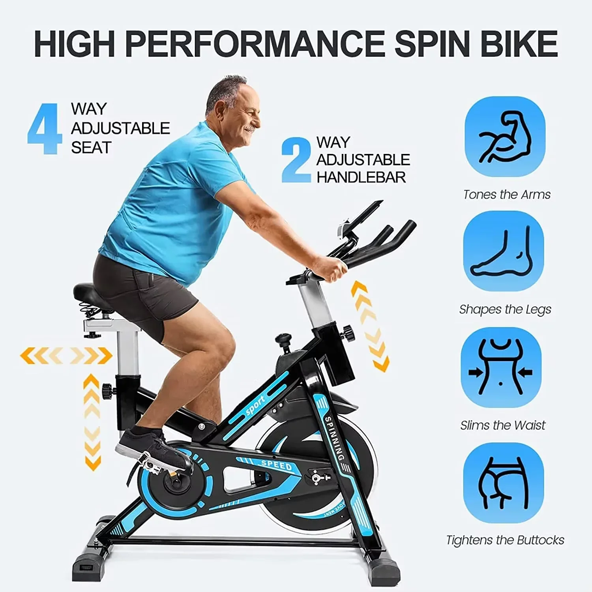
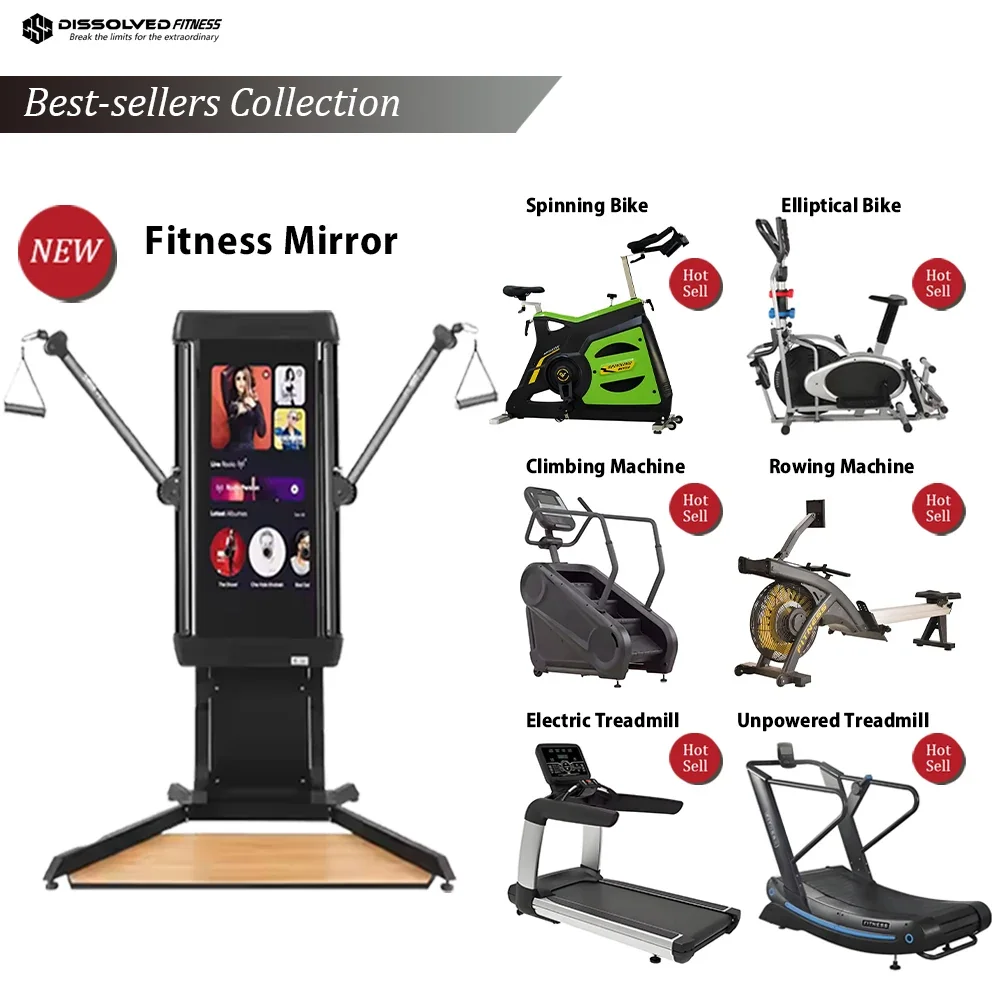
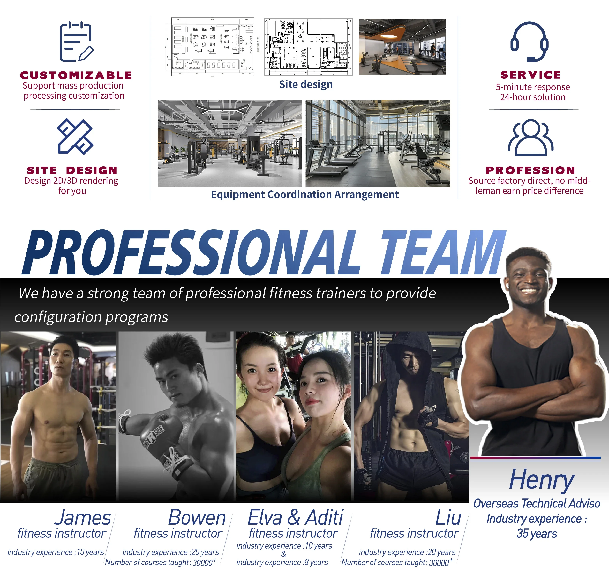
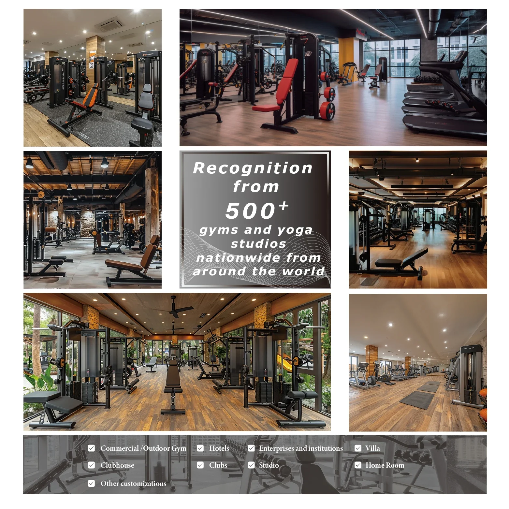
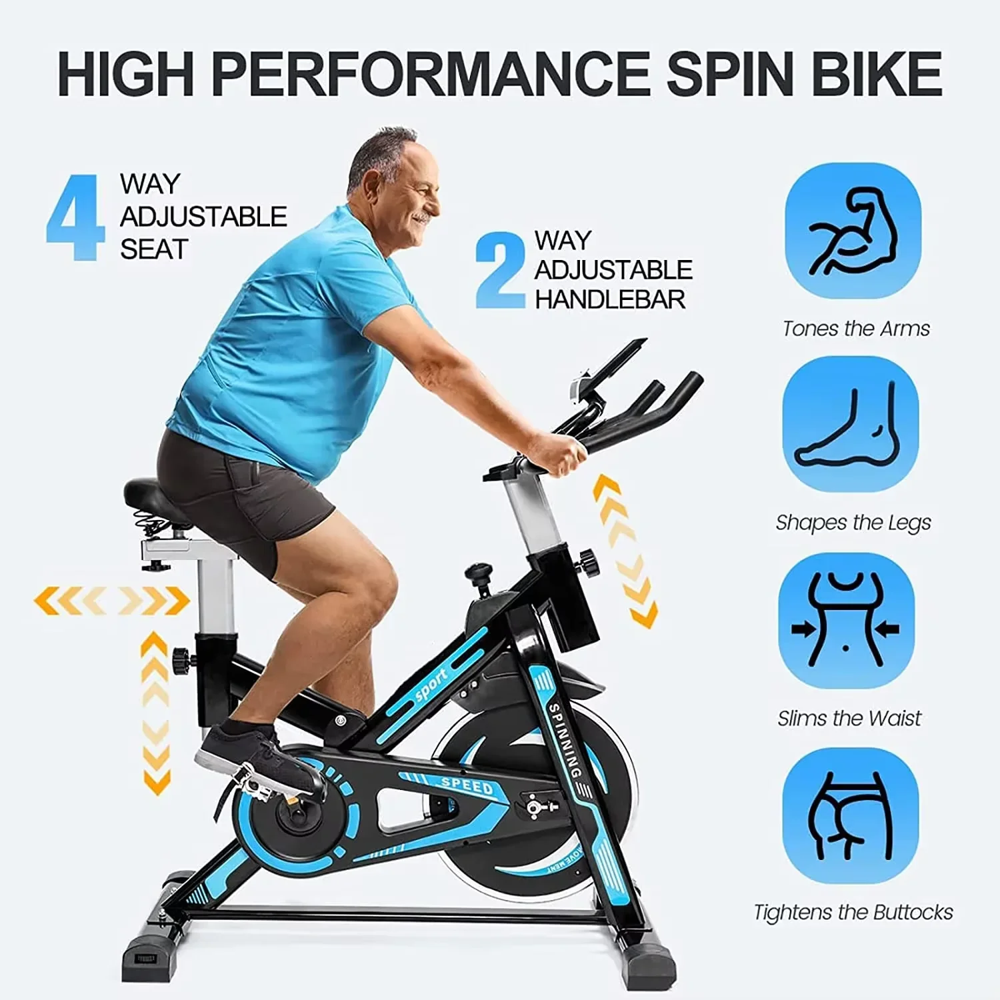
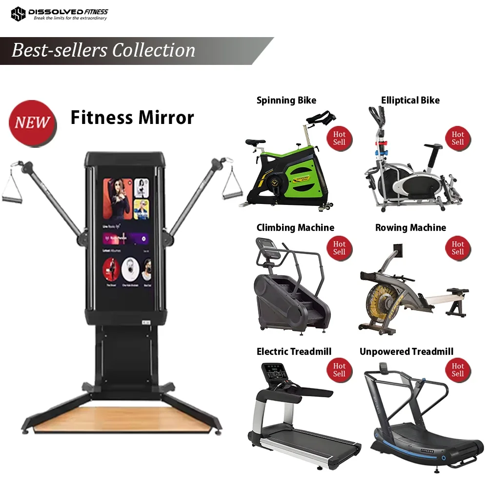
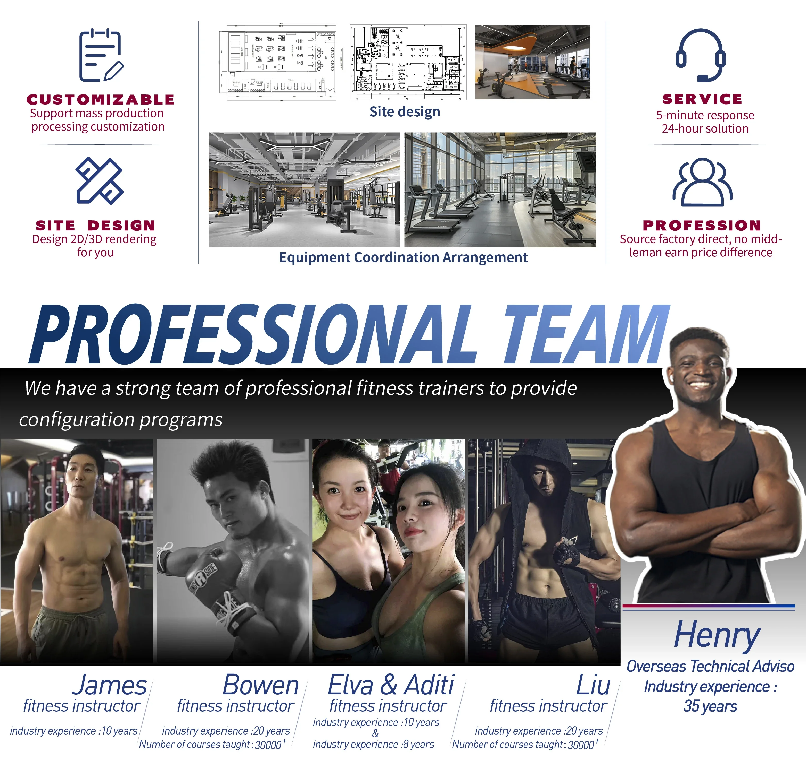
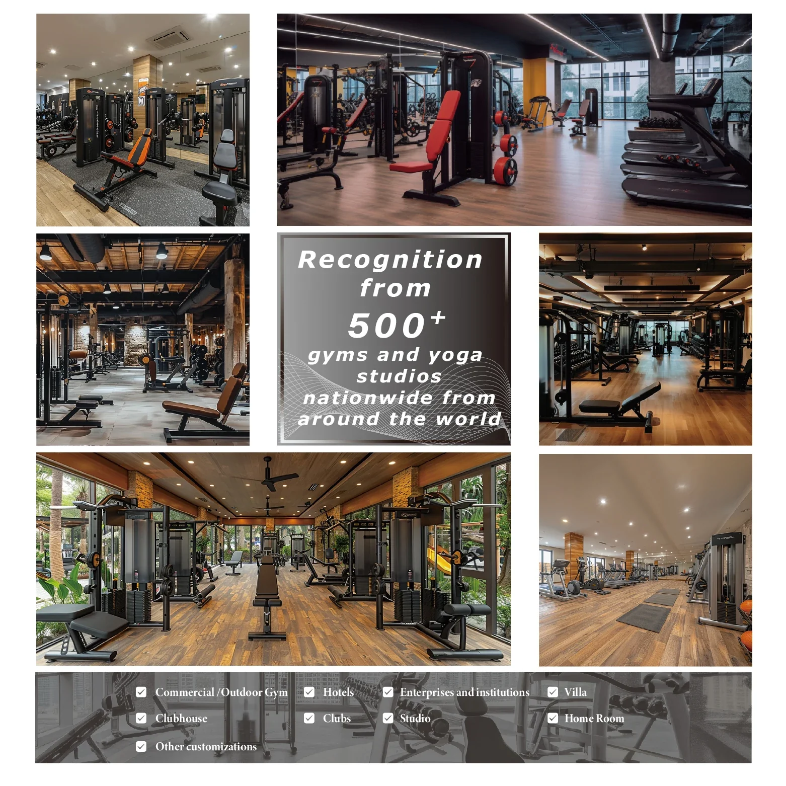

Bicicleta de spinning de grado comercial: transmisión magnética suave y monitor de frecuencia cardíaca para interiores.
- Monitor de Frecuencia Cardíaca Integrado: Monitorea tu frecuencia cardíaca en tiempo real para asegurarte de que trabajas dentro de tu zona objetivo para maximizar la quema de calorías y mejorar tu sistema cardiovascular.
- Asiento y manillar ajustables: Personaliza tu posición de ciclismo para máxima comodidad y eficiencia biomecánica, independientemente de tu altura o complexión.
- Volante de inercia resistente: Experimenta una sensación de ciclismo realista con el suave impulso que proporciona el volante de inercia resistente.
Tanto si eres un atleta experimentado como si estás empezando tu trayectoria en el mundo del fitness, la Bicicleta de Fitness de Grado Comercial te ofrece todo lo necesario para una experiencia de ciclismo indoor efectiva y agradable.
Esta bicicleta de fitness de grado comercial está diseñada para entrenamientos intensos y un rendimiento duradero. Experimente un funcionamiento suave y silencioso gracias a su potente sistema de accionamiento magnético. Controle su progreso con el monitor de frecuencia cardíaca integrado, asegurándose de mantenerse dentro de su zona objetivo.
- Sistema de accionamiento magnético suave: Proporciona una experiencia de entrenamiento constante y silenciosa.
- Monitor de frecuencia cardíaca integrado: Registra su frecuencia cardíaca para un entrenamiento efectivo.
- Construcción robusta: Diseñada para soportar un uso riguroso en entornos comerciales.
Esta bicicleta de fitness está diseñada pensando tanto en el rendimiento como en la comodidad del usuario.
- Construcción de acero resistente para mayor estabilidad y durabilidad.
- Asiento y manillar ajustables para adaptarse a una amplia gama de alturas y preferencias de ciclistas.
Mejore su experiencia de fitness con esta bicicleta de fitness de grado comercial. La combinación de resistencia magnética suave, monitorización de la frecuencia cardíaca y construcción duradera la hace ideal para entrenamientos intensos y para alcanzar tus objetivos de fitness.
- Mejora tu salud cardiovascular con sesiones regulares de ciclismo.
- Quema calorías y aumenta tu condición física general.
- Monitorea tu progreso y optimiza tu entrenamiento con datos de frecuencia cardíaca.
Instala esta bicicleta de fitness en un espacio dedicado al entrenamiento. Ajusta el sillín y el manillar para una comodidad óptima y comienza tu entrenamiento pedaleando a un ritmo cómodo. Utiliza el monitor de frecuencia cardíaca integrado para controlar tu intensidad y asegurarte de que estás dentro de tu zona objetivo.